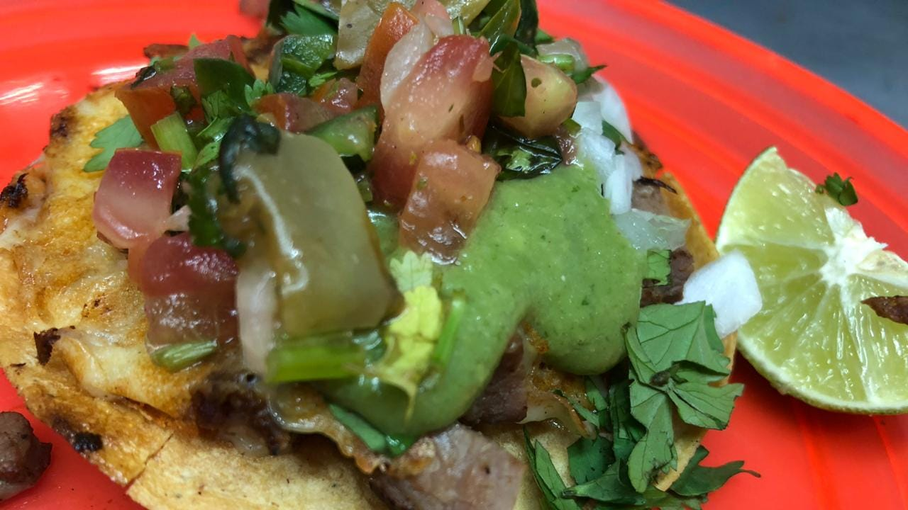

Taquería Entre Tortillas
¡Descubre el auténtico sabor de México!
Bienvenido a Taquería Entre Tortillas, donde no solo te ofrecemos comida excepcional, sino una experiencia completa. Disfruta de nuestro ambiente acogedor, decorado con colores vivos y música alegre, perfecto para momentos inolvidables con amigos y familiares.
No te pierdas nuestras especialidades de la casa, desde nuestras refrescantes margaritas hasta nuestras auténticas aguas frescas, perfectas para acompañar cualquier comida. ¡Ven y descubre el verdadero sabor de México en cada bocado!